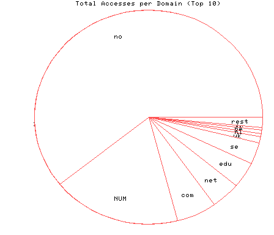
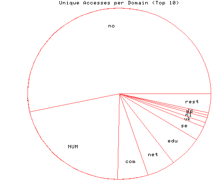

HTTP Server Domain Statistics
Covers: 09/25/95 to 10/08/95 (14 days).
All dates are in local time.
1 level, sorted by number of requests, 14 unique domains.
596 : 118 : 10/08/95 : Norway (.no) 179 : 47 : 10/08/95 : (numerical domains) 56 : 12 : 10/08/95 : US Commercial (.com) 41 : 11 : 10/06/95 : Network (.net) 38 : 13 : 10/08/95 : US Educational (.edu) 32 : 6 : 10/05/95 : Sweden (.se) 9 : 2 : 10/08/95 : United Kingdom (.uk) 5 : 2 : 10/06/95 : Netherlands (.nl) 5 : 1 : 09/29/95 : Belgium (.be) 4 : 1 : 09/27/95 : France (.fr) 3 : 2 : 10/08/95 : Canada (.ca) 3 : 1 : 10/07/95 : Australia (.au) 3 : 2 : 10/06/95 : Germany (.de) 3 : 1 : 09/28/95 : Iceland (.is)

Statistics generated at Fri Oct 13 16:44:35 MET 1995, (C) Oslonett AS, 1995.